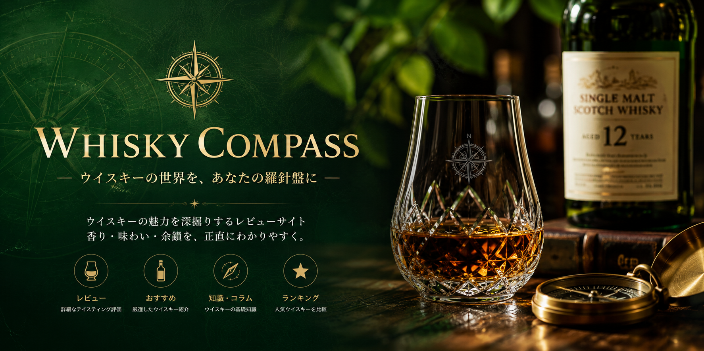

ハイボール
食事と合わせやすく、爽やかな香りを楽しみたいときに。

WHISKY FINDER
気になる条件を選ぶだけ。あなた好みのボトルを絞り込みます。
CURATED REVIEWS
WHISKY BASICS
同じボトルでも、飲み方ひとつで表情は変わります。最初の一杯がもっと楽しみになる、小さなガイド。
食事と合わせやすく、爽やかな香りを楽しみたいときに。
氷が溶けるほどに変化する香りが、ゆっくり味わえます。
ウイスキーの個性をそのまま感じたいときにおすすめ。
バニラやはちみつ系のやさしい香りから入ると安心です。
FAQ
初めてウイスキーを選ぶなら、「飲み方」「香り」「予算」の3つを順番に決めていくのがポイントです。
まずは「飲み方」と「香りの好み」から選ぶのがおすすめです。食事と楽しむならハイボール向き、甘い香りが好きならフルーティーやバニラ系が目安になります。
3,000〜5,000円帯は入門用としてバランスが良く、香りと味わいの違いを試しやすい価格帯です。
まずはハイボールで軽やかさを確認し、次にロックやストレートで深みを比べると選びやすくなります。
果実や花のような香りならフルーティー系。焚き火や土の香りがあればスモーキー系です。まずは「好きな香り」を基準にしましょう。
直射日光を避け、温度変化が少ない場所に保管します。開封後はできるだけ早めに飲みきると香りが落ちにくいです。